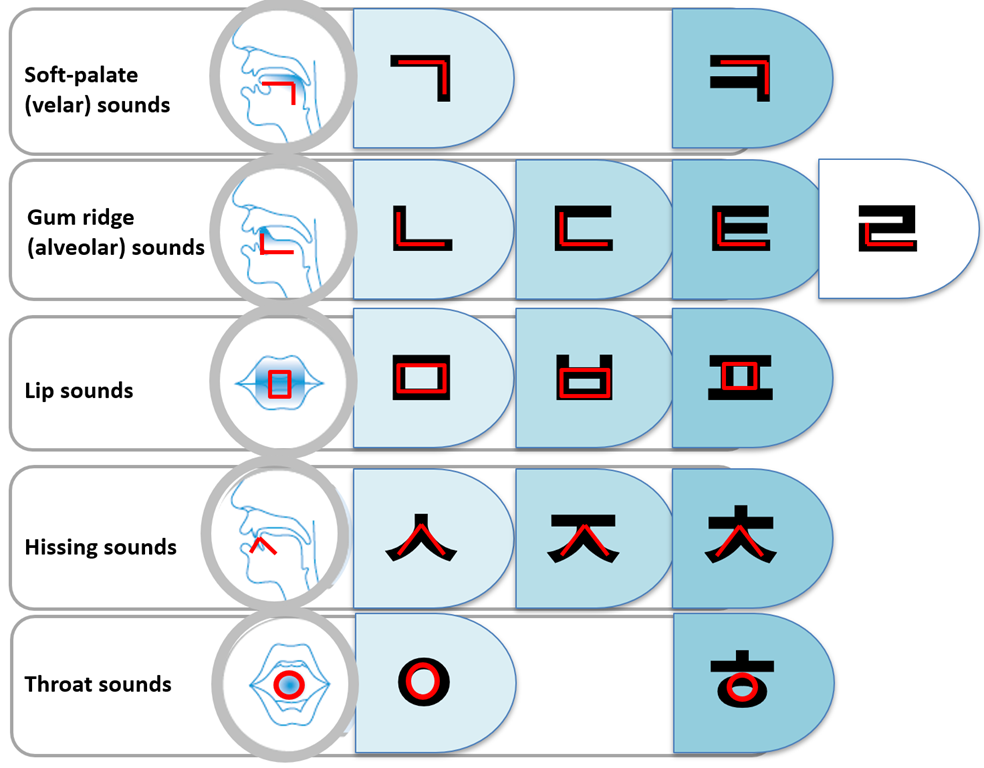

Gramática: las 30 consonantes
Ya vimos que las vocales se crearon a partir de los tres elementos: hombre, sol y tierra. Ahora, es el turno de las consonantes, que tienen una historia aún más fascinante.
Antes de crear el Hangul, el Rey Sejong investigó otros alfabetos del mundo y se dio cuenta de que todos tenían consonantes que producían los mismos sonidos. Por ello, prefirió crear su propio sistema basado en la colocación de los órganos del habla, lo que le permitió tener el menor número posible de consonantes para producir todos los sonidos necesarios. Además, estas consonantes siguen la misma lógica que las vocales: solo añadiendo un trazo más, se consigue otro sonido "parecido".
El enfoque innovador del Rey Sejong y su equipo consistió en crear un sistema basado en la anatomía y la fonética del habla humana. Para ello, analizaron la posición y la forma de los órganos del habla al producir diferentes sonidos y diseñaron las consonantes de acuerdo con esta lógica. Esto permitió que el Hangul fuera un sistema muy eficiente y preciso para representar los sonidos del coreano.
Además, las consonantes en Hangul están diseñadas de manera que reflejen visualmente la articulación de los sonidos. Por ejemplo, las consonantes formadas en la parte delantera de la boca suelen tener trazos verticales, mientras que las que se forman en la parte posterior tienen trazos horizontales.
Creo que el mejor gráfico que he encontrado para ilustrar todas las propiedades es este de https://classkorea.com/basic-consonants/

https://classkorea.com/basic-consonants/


Nicksnote